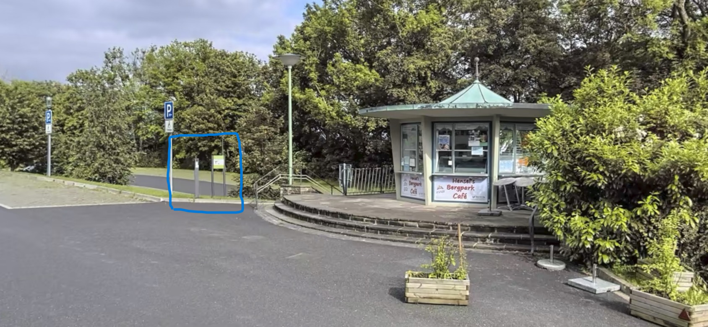

Gäste oben aussteigen lassen
Fahrt zunächst zum Schlosshotel Bad Wilhelmshöhe. Dort steigen alle Mitfahrer aus – so ersparen sich insbesondere ältere Gäste, Kinder und Gäste in festlicher Kleidung den steilen Anstieg.
Bitte nehmt beim Aussteigen alle Sachen mit, die ihr für den restlichen Tag und Abend noch braucht – zum Beispiel Jacke, Handtasche, Wechselkleidung oder Kindersachen.
Fahrer parkt anschließend
Empfohlen · unten kostenlos parken
Der Fahrer parkt anschließend am Parkplatz Wilhelmshöhe / Ochsenallee. Dort stellen wir euch ein kostenloses Parkticket zur Verfügung. Der Rückweg zur Schlosskapelle ist kurz, aber deutlich bergauf – bitte plant dafür etwas Zeit ein.
Alles in einer Karte
In unserer Google-Maps-Karte findet ihr alle wichtigen Punkte und Laufwege auf einen Blick.
Ihr kommt erst zur Feier?
Wer direkt zur Feier kommt, parkt ebenfalls unten am Parkplatz Wilhelmshöhe / Ochsenallee. Auf dem mittleren Parkdeck direkt am Kiosk befindet sich die Rufsäule für den Shuttle. Den genauen Punkt findet ihr in unserer Karte.
